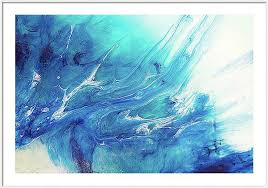
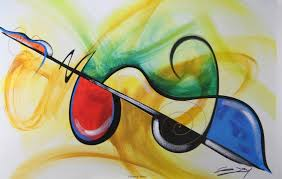
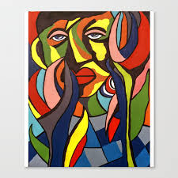

Modernism
Modernism is both a philosophical movement and an art movement that, along with cultural trends and changes,...
Abstract Art

Abstract art uses visual language of shape, form, color and line to create a composition which may exist with a degree of independence from visual references in the world.[1] Western art had been, from the Renaissance up to the middle of the 19th century, underpinned by the logic of perspective and an attempt to reproduce an illusion of visible reality. The arts of cultures other than the European had become accessible and showed alternative ways of describing visual experience to the artist. By the end of the 19th century many artists felt a need to create a new kind of art which would encompass the fundamental changes taking place in technology, science and philosophy. The sources from which individual artists drew their theoretical arguments were diverse, and reflected the social and intellectual preoccupations in all areas of Western culture at that time.[2]
Abstract art, non-figurative art, non-objective art, and non-representational art are closely related terms. They are similar, but perhaps not of identical meaning.
Abstraction indicates a departure from reality in depiction of imagery in art. This departure from accurate representation can be slight, partial, or complete. Abstraction exists along a continuum. Even art that aims for verisimilitude of the highest degree can be said to be abstract, at least theoretically, since perfect representation is likely to be exceedingly elusive. Artwork which takes liberties, altering for instance color and form in ways that are conspicuous, can be said to be partially abstract. Total abstraction bears no trace of any reference to anything recognizable. In geometric abstraction, for instance, one is unlikely to find references to naturalistic entities. Figurative art and total abstraction are almost mutually exclusive. But figurative and representational (or realistic) art often contains partial abstraction.
Both geometric abstraction and lyrical abstraction are often totally abstract. Among the very numerous art movements that embody partial abstraction would be for instance fauvism in which color is conspicuously and deliberately altered vis-a-vis reality, and cubism, which alters the forms of the real life entities depicted.[3][4]
History
Main articles: History of painting and Western painting
[icon]
This section needs expansion. You can help by adding to it. (June 2019)
Abstraction in early art and many cultures
Main articles: Prehistoric art and Eastern art history
Much of the art of earlier cultures – signs and marks on pottery, textiles, and inscriptions and paintings on rock – used simple, geometric and linear forms which might have had a symbolic or decorative purpose.[5] It is at this level of visual meaning that abstract art communicates.[6] One can enjoy the beauty of Chinese calligraphy or Islamic calligraphy without being able to read it.[7]
Immortal in splashed ink, Liang Kai, China, 12th century
In Chinese painting, abstraction can be traced to the Tang dynasty painter Wang Mo (王墨), who is credited to have invented the splashed-ink painting style.[8] While none of his paintings remain, this style is clearly seen in some Song Dynasty Paintings. The Chan buddhist painter Liang Kai (梁楷, c. 1140–1210) applied the style to figure painting in his "Immortal in splashed ink" in which accurate representation is sacrificed to enhance spontaneity linked to the non-rational mind of the enlightened. A late Song painter named Yu Jian, adept to Tiantai buddhism, created a series of splashed ink landscapes that eventually inspired many Japanese Zen painters. His paintings show heavily misty mountains in which the shapes of the objects are barely visible and extremely simplified. This type of painting was continued by Sesshu Toyo in his later years.
Mountain market, clearing Mist, Yu Jian, China
Another instance of abstraction in Chinese painting is seen in Zhu Derun's Cosmic Circle. On the left side of this painting is a pine tree in rocky soil, its branches laced with vines that extend in a disorderly manner to the right side of the painting in which a perfect circle (probably made with help of a compass[9]) floats in the void. The painting is a reflection of the Daoist metaphysics in which chaos and reality are complementary stages of the regular course of nature.
In Tokugawa Japan, some Zen monk-painters created Enso, a circle who represents the absolute enlightenment. Usually made in one spontaneous brush stroke, it became the paradigm of the minimalist aesthetic that guided part of the Zen painting.
19th century
Main articles: Romanticism, Impressionism, Post-Impressionism, and Expressionism
Patronage from the church diminished and private patronage from the public became more capable of providing a livelihood for artists.[10][11] Three art movements which contributed to the development of abstract art were Romanticism, Impressionism and Expressionism. Artistic independence for artists was advanced during the 19th century. An objective interest in what is seen, can be discerned from the paintings of John Constable, J M W Turner, Camille Corot and from them to the Impressionists who continued the plein air painting of the Barbizon school.
James McNeill Whistler, Nocturne in Black and Gold: The Falling Rocket (1874), Detroit Institute of Arts. A near abstraction, in 1877 Whistler sued the art critic John Ruskin for libel after the critic condemned this painting. Ruskin accused Whistler of "ask[ing] two hundred guineas for throwing a pot of paint in the public's face."[12][13]
Early intimations of a new art had been made by James McNeill Whistler who, in his painting Nocturne in Black and Gold: The falling Rocket, (1872), placed greater emphasis on visual sensation than the depiction of objects.
Expressionist painters explored the bold use of paint surface, drawing distortions and exaggerations, and intense color. Expressionists produced emotionally charged paintings that were reactions to and perceptions of contemporary experience; and reactions to Impressionism and other more conservative directions of late 19th-century painting. The Expressionists drastically changed the emphasis on subject matter in favor of the portrayal of psychological states of being. Although artists like Edvard Munch and James Ensor drew influences principally from the work of the Post-Impressionists they were instrumental to the advent of abstraction in the 20th century. Paul Cézanne had begun as an Impressionist but his aim – to make a logical construction of reality based on a view from a single point,[14] with modulated color in flat areas – became the basis of a new visual art, later to be developed into Cubism by Georges Braque and Pablo Picasso.
Additionally in the late 19th century in Eastern Europe mysticism and early modernist religious philosophy as expressed by theosophist Mme. Blavatsky had a profound impact on pioneer geometric artists like Hilma af Klint and Wassily Kandinsky. The mystical teaching of Georges Gurdjieff and P.D. Ouspensky also had an important influence on the early formations of the geometric abstract styles of Piet Mondrian and his colleagues in the early 20th century.[15]
20th century
Francis Picabia, c. 1909, Caoutchouc, Centre Pompidou, Musée national d'art moderne, Paris
Henri Matisse, The Yellow Curtain, 1915, Museum of Modern Art. With his Fauvist color and drawing Matisse comes very close to pure abstraction.
Main articles: Western painting, Fauvism, and Cubism
Post Impressionism as practiced by Paul Gauguin, Georges Seurat, Vincent van Gogh and Paul Cézanne had an enormous impact on 20th-century art and led to the advent of 20th-century abstraction. The heritage of painters like Van Gogh, Cézanne, Gauguin, and Seurat was essential for the development of modern art. At the beginning of the 20th century Henri Matisse and several other young artists including the pre-cubist Georges Braque, André Derain, Raoul Dufy and Maurice de Vlaminck revolutionized the Paris art world with "wild", multi-colored, expressive landscapes and figure paintings that the critics called Fauvism. With his expressive use of color and his free and imaginative drawing Henri Matisse comes very close to pure abstraction in French Window at Collioure (1914), View of Notre-Dame (1914), and The Yellow Curtain from 1915. The raw language of color as developed by the Fauves directly influenced another pioneer of abstraction, Wassily Kandinsky.
Postmodernism
Postmodernism is a body of art movements that sought to contradict some aspects of modernism or some...
Expressionism
Expressionism is a modernist movement, initially in poetry and painting, originating in Germany at the beginning of the...
Contemporary Art
Contemporary Art is the art of today, produced in the second half of the 20th century or in the 21st century....
Surrealism
Surrealism is a cultural movement that began in the early 1920s, and is best known for its visual artworks and writings.